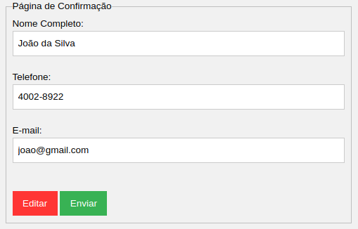

Para conteúdo que exige entrada de dados por parte do usuário, devem ser fornecidas instruções de preenchimento juntamente com as etiquetas (elemento LABEL). Recomenda-se que a entrada de dados seja facilitada, como a exclusão de caracteres especiais em campos numéricos (Ex: número de documentos como CPF, datas, moeda), e a simplificação de campos. Campos de preenchimento obrigatório devem ser claramente indicados. Uma solução para isso é inserir um asterisco em forma de imagem ao lado de cada campo obrigatório, fornecendo uma descrição no atributo alt para esta imagem, que poderia ser “campo obrigatório” ou, simplesmente, “obrigatório”. Para quem enxerga, basta visualizar o asterisco para distinguir os campos obrigatórios. Com o leitor de tela, a informação do alt é lida para o usuário.
Quando um erro de entrada de dados for automaticamente detectado, o item que apresenta erro deve ser identificado e descrito ao usuário por texto.
Após a validação dos dados, antes de enviar o formulário, uma tela de confirmação deverá aparecer, permitindo que o usuário verifique e, se necessário, edite as informações antes de enviá-las.
Estabelecer blocos dividindo o formulário por tipo de dado pedido através de etiquetas (elemento LABEL).
O CAPTCHA deverá ser fornecido em forma de pergunta simples de interpretação (CAPTCHA Humano), e este preferencialmente só deverá ser apresentado após pelo menos 2 tentativas de envio do formulário, por exemplo. É preciso garantir que a pergunta não seja de difícil resolução, permitindo que a mesma possa ser respondida por pessoas de variadas culturas e níveis de instrução.